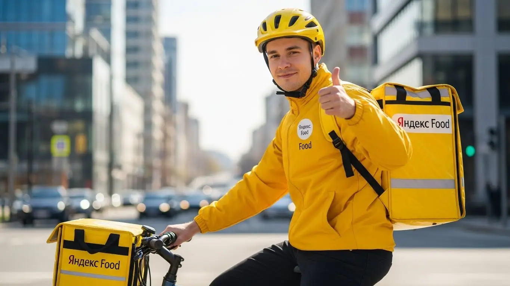
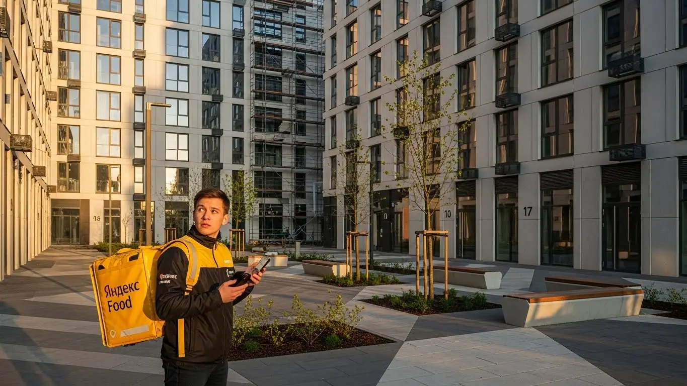
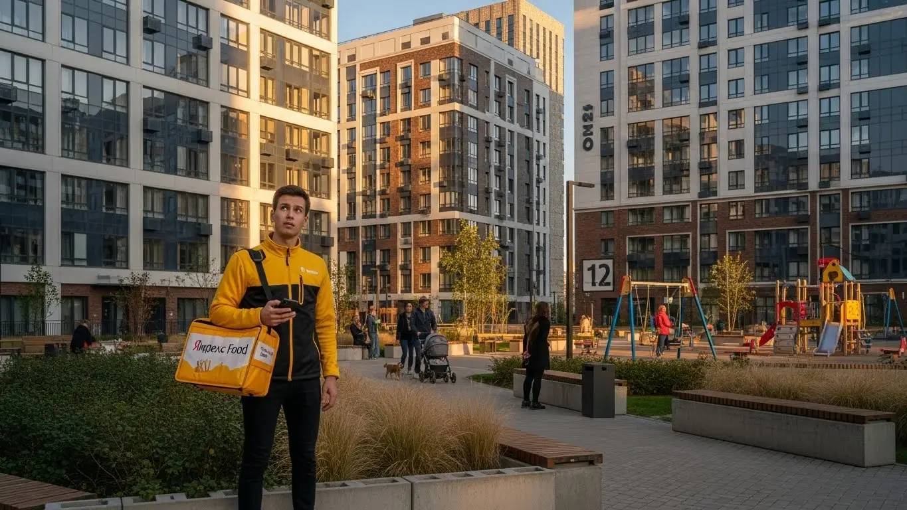

Работа курьером Яндекс Еды в Домодедово в 2025-2026: доход и условия

- Работа курьером Яндекс Еды в Домодедово: для кого эта вакансия и что вы получите
- Сколько вы будете зарабатывать курьером в Домодедово: калькулятор дохода и разбор выплат
- Реальный заработок курьера в Домодедово: смены и месячный доход
- График работы и форматы занятости
- Требования к кандидату и документы
- Самозанятость, налоги и юридическая чистота
- Пошаговое оформление и первый выход на линию в Домодедово
- Пешком, на вело или на авто: что выгоднее в Домодедово
- Районы, маршруты и «топовые» зоны заказов в Домодедово
- Безопасность, страховка, штрафы и оплата простоя
- Плюсы и возможные минусы работы курьером в Домодедово
- Реальные истории и отзывы курьеров из Домодедово
- Ответы на главные вопросы о работе курьером Яндекс Еды в Домодедово
- Короткие ответы на главные вопросы
- Итоги и ваш следующий шаг
Все города
Думаешь податься в курьеры и ищешь инфу про работу в Яндекс Еде в Домодедово? Наверняка в голове каша: сколько реально выйдет чистыми? Не убью ли я велик или машину на наших дорогах, особенно где-нибудь в частном секторе? И как не встать намертво в пробке на Каширке в час пик, потеряв и время, и деньги? Это не пустые страхи, а главные вопросы, на которые нужно знать ответ, прежде чем надевать жёлтую куртку в нашем городе.
Поверь, рекламные обещания про «лёгкие деньги» — это одно, а реальная работа курьером в Домодедово — совсем другое. Здесь твой заработок зависит не только от усердия, но и от знания города. Не понимая, где и когда самый спрос, как работает приоритет в приложении и какие расходы съедят твой доход (бензин, налоги, амортизация), можно в первый же месяц разочароваться. Большинство новичков у нас наступают на одни и те же грабли: гоняются за копеечными заказами в неудобные районы или теряют рейтинг из-за мелочей.
Поэтому я и написал этот гид. Здесь мы без воды и рекламы разберём всё по косточкам. Посчитаем, сколько на самом деле приносит работа курьером Яндекс Еды, Лавки и Доставки в Домодедово на машине, велосипеде и пешком. Я покажу на карте самые «хлебные» районы и те, куда лучше не соваться. Выясним, как погода и пробки влияют на заработок, за что реально штрафуют и как этого избежать. Если вы хотите сразу перейти к делу, все актуальные условия и форма для анкеты доступны на странице про работу курьером Яндекс Еда в Домодедово.
Меня зовут Алексей. Я сам не один год откатал курьером по Домодедово, а сейчас у меня свой небольшой таксопарк-партнёр, так что всю эту кухню я знаю с обеих сторон. Никаких сказок — только факты, цифры и советы, которые сэкономят тебе нервы и деньги. Готов? Тогда давай по порядку, сейчас всё разложу по полочкам.
Чтобы ты сразу понял, о чём речь и где искать ответы, я накидал короткий навигатор по статье.
Что ты точно узнаешь из этого разбора
В этой статье ты ТОЧНО узнаешь:
- Сколько реально можно заработать в Домодедово за смену пешком, на велосипеде и на авто, и как погода влияет на доход?
- В каких районах Домодедово (у ТРЦ или в спальниках) больше всего заказов и выше коэффициенты?
- Что выгоднее выбрать в Домодедово — пешую доставку, велосипед или авто, и с чего лучше начать новичку?
- За что на самом деле могут снизить рейтинг или применить штрафы, и как работает бесплатная страховка на смене?
- Как правильно выбирать слоты в приложении «Яндекс Про», чтобы не сидеть без заказов, и что такое оплата простоя?
- Как за 10 минут оформить самозанятость и почему это выгоднее, чем работать через партнёров или неофициально?
А если тебе некогда читать всю статью — переходи сразу к заключению, где ты найдёшь короткие ответы на все эти вопросы и указания, в каких разделах искать подробности.
А вот основные цифры и факты о работе в Домодедово в одной картинке.
Работа курьером в Домодедово: ключевые цифры
Работа курьером Яндекс Еды в Домодедово: для кого эта вакансия и что вы получите
Кому подойдёт эта работа в Домодедово
Скажу прямо: работа курьером — это не для всех, но для многих это отличный вариант подработки или основного заработка. В Домодедово эта вакансия идеально подходит студентам, которым нужен доход после пар. График гибкий, можно выходить на пару часов вечером и в выходные, не забивая на учёбу. Деньги приходят быстро, не нужно ждать конца месяца.
Также это хороший старт для тех, у кого нет опыта работы. Никто не будет требовать от тебя диплом или резюме на пять страниц. Нужен только смартфон, желание двигаться и аккуратность. Если ты ищешь основной источник дохода, но ценишь свободу и гибкие условия — это тоже твой вариант. Ты сам себе начальник: решаешь, когда работать, а когда отдыхать. Ну и, конечно, для водителей на своём авто это возможность превратить машину из пассива в актив, особенно в таком большом городе, как наш, с его пригородами.
Главные преимущества для жителей районов Центральный, Авиационный, Северный
Главный плюс работы курьером в Домодедово — возможность доставлять заказы буквально в соседнем дворе. Тебе не нужно тратить по полтора часа на дорогу до «офиса». Живёшь, например, в микрорайоне Центральный — выбираешь эту зону в приложении «Яндекс Про» и начинаешь смену, как только вышел из подъезда. То же самое касается жителей Авиационного или Северного микрорайонов.
Это экономит не только время, но и деньги на проезд. К тому же, ты работаешь на знакомой территории, знаешь все короткие пути, где срезать через дворы, и где находятся нужные подъезды. За счёт этого получается выполнять заказы быстрее, а значит, и зарабатывать больше. Система сама предлагает тебе ближайшие доставки, чтобы минимизировать холостой пробег.
Краткое обещание по доходу и условиям
Если говорить о деньгах, то зарплата курьера в Домодедово вполне реальная. При частичной занятости, выходя на 4–5 часов в день, можно спокойно делать 2500–3500 рублей за смену. Если же рассматривать это как полную занятость и работать по 8–10 часов, то доход может доходить и до 85 000–90 000 рублей в месяц. Это не потолок, активные автокурьеры в пиковые часы и непогоду зарабатывают и больше.
Ключевые условия работы просты и прозрачны. Во-первых, свободный график — ты сам выбираешь дни и часы в приложении. Во-вторых, ежедневные выплаты на карту: отработал смену — получил деньги. В-третьих, начать можно без опыта, всему научат на коротком онлайн-инструктаже. Для получения выплат нужен статус самозанятого, но его оформление занимает 10–15 минут онлайн. Никаких сложных собеседований и долгого ожидания.

Сколько вы будете зарабатывать курьером в Домодедово: калькулятор дохода и разбор выплат
Из чего складывается доход курьера
В сервисах Яндекса, будь то Еда, Лавка или Доставка, твой заработок — это не просто ставка за час, а конструктор из нескольких частей. Понимание этой системы — ключ к хорошему доходу. Во-первых, есть базовая оплата за каждый выполненный заказ, которая включает подачу в ресторан и доставку клиенту. Во-вторых, к ней добавляется плата за расстояние — чем дальше везти, тем больше денег.
Кроме этого, есть повышающие коэффициенты. В часы пик (обед, ужин), в плохую погоду или в зонах с высоким спросом стоимость заказа умножается на этот коэффициент. Также есть персональные бонусы за выполнение определённого числа заказов в неделю. Не забывай про чаевые — они полностью твои. И самое важное: Яндекс платит за простой, если ты на плановом слоте, а заказов нет, и может компенсировать стоимость проезда на общественном транспорте при доставке на дальние расстояния.
Как пользоваться калькулятором дохода
На странице есть специальный калькулятор — это не просто игрушка, а полезный инструмент для планирования. Пользоваться им элементарно. Сначала выбираешь свой город — Домодедово. Затем указываешь свой формат: пеший курьер, велокурьер или доставка на своём авто.
После этого двигаешь ползунки: выставляешь, сколько часов в день и сколько дней в неделю ты готов работать. На основе этих данных и статистики по нашему городу калькулятор моментально покажет тебе примерный диапазон твоего заработка за день и за месяц. Это поможет трезво оценить, на какие цифры можно рассчитывать.
Калькулятор дохода курьера в Домодедово
Примерный доход в месяц:
* Расчёт примерный и основан на средней ставке ~450 ₽/час в Домодедово. Реальный доход зависит от спроса, бонусов, чаевых и типа доставки.
Примеры расчёта для пешего, вело- и авто‑курьера в Домодедово
Давай на конкретных примерах, чтобы было понятнее.
- Пеший курьер. Допустим, ты студент и работаешь в Центральном районе по 4 часа после учёбы 5 дней в неделю. Заказы там плотные, расстояния небольшие. В среднем за такую смену можно заработать 1600–2000 рублей. За месяц выйдет около 32 000–40 000 рублей.
- Велокурьер. Ты решил плотно поработать в выходные, по 8 часов в субботу и воскресенье. На велосипеде удобно гонять между спальными районами, например, из Северного в Южный. За счёт скорости ты выполняешь больше заказов. За такой уикенд можно сделать 6000–8000 рублей.
- Автокурьер. Это уже полная занятость. Ты работаешь 5/2 по 8–9 часов, берёшь заказы по всему городу и в пригород — в те же Константиново или Ям. Особенно выгодно возить большие заказы из гипермаркетов и работать в плохую погоду, когда коэффициенты максимальные. Здесь твой месячный доход может легко составить 80 000–100 000 рублей и выше.
Вот реальный кейс от одного из водителей-курьеров. Парень на старенькой Lada Granta работает в Домодедово. Он специально берёт вечерние слоты с 18:00 до 00:00 и катается по всему городскому округу, захватывая частный сектор. В это время и пробок меньше, и коэффициенты выше. За такую 6-часовую смену он стабильно привозит 3500-4500 рублей чистыми, уже за вычетом бензина. В месяц у него выходит под сотню тысяч.
В итоге твой доход напрямую зависит от того, как ты подходишь к делу. Не просто ждёшь заказов, а анализируешь спрос, выбираешь правильный транспорт и время. Начни с малого, попробуй разные форматы и районы в Домодедово, и быстро поймёшь, где для тебя самые выгодные условия.
Реальный заработок курьера в Домодедово: смены и месячный доход
Давай разберёмся без рекламных обещаний. Цифры в вакансиях — это одно, а реальный доход, который ты получишь, — совсем другое. В Домодедово, как и везде, твой заработок курьером в Яндексе зависит не только от часов на линии, но и от того, как ты работаешь головой. Я покажу реальные расклады, чтобы у тебя не было иллюзий, а был чёткий план.
Главное, что нужно понять: твой доход — это не фиксированная зарплата. Он складывается из множества факторов: твоего транспорта, выбранного времени, района и даже погоды. Кто-то выбирает подработку на пару часов в день и имеет приятный бонус к основному заработку, а кто-то работает полный день и обеспечивает семью. Оба варианта реальны, если подойти к делу с умом.
Диапазон дохода для подработки и полной занятости
Если говорить о конкретных цифрах по Домодедово, то картина примерно такая. Это средний заработок «чистыми» за смену, после вычета комиссии сервиса, но до вычета расходов на топливо/проезд и налога для самозанятых.
Подработка (2–4 часа в день):
- Пеший курьер: В среднем 800–1500 рублей. Идеально для коротких доставок из ресторанов и магазинов в центре или в густонаселённых микрорайонах вроде Северного, где много заказов в шаговой доступности.
- Велокурьер: Выходит уже 1000–1800 рублей. На велосипеде ты мобильнее, успеваешь захватить заказы из соседних кварталов, не стоишь в пробках на Каширском шоссе в час пик.
- Курьер на автомобиле: Здесь доход за короткую смену самый высокий — 1500–2500 рублей. На своем авто ты можешь брать дорогие заказы из гипермаркетов или доставлять посылки в отдалённые части города, например, в микрорайон Авиационный или Белые Столбы.
Полная занятость (8–10 часов в день):
- Пеший курьер: Реально делать 2500–3500 рублей. Но будь готов много ходить, это серьёзная физическая нагрузка.
- Велокурьер: Стабильно выходит 3000–4500 рублей. Это, на мой взгляд, золотая середина для Домодедово по соотношению скорости, расходов и дохода.
- Курьер на автомобиле: Самый высокий потенциал — 4000–6000 рублей в день и больше. Но не забывай вычитать из этой суммы расходы на бензин, мойку и амортизацию машины. В месяц при полной занятости на авто можно выходить на 80 000–120 000 рублей.
Как район, время суток и погода влияют на доход
Запомни три кита высокого заработка: место, время и погода. Если ты научишься ловить правильные моменты, будешь зарабатывать на 30–50% больше, чем тот, кто просто катается по городу бездумно.
В Домодедово самые прибыльные зоны — это центр города, особенно районы вокруг ТРЦ «Торговый квартал» и улицы Советская, где много заказов из Яндекс Еды. Также стабильно много доставок в новых жилых комплексах, таких как «Новое Домодедово» или «Южное Домодедово». Пиковое время — обед (с 12:00 до 14:00) и ужин (с 18:00 до 21:00), а также все выходные и праздники. В это время в приложении «Яндекс Про» карта горит фиолетовым — это значит, что действует повышенный коэффициент, и за каждый заказ ты получаешь больше денег.
А погода — твой лучший друг. Как только начинается дождь, снегопад или сильная жара, большинство курьеров предпочитают отсидеться дома. А вот количество заказов, наоборот, взлетает до небес. Коэффициенты могут удваивать, а то и утраивать стоимость доставки. Плюс, в плохую погоду клиенты чаще оставляют щедрые чаевые — из благодарности, что ты доставил им еду в тепле и комфорте.
Советы по увеличению заработка от опытных курьеров
Чтобы не просто работать, а именно зарабатывать, нужно подходить к сменам стратегически. Вот несколько проверенных советов от опытных курьеров и из моего личного опыта.
Во-первых, всегда смотри на карту спроса в «Яндекс Про» перед выходом на линию. Не сиди в своём «зелёном» районе, если видишь, что в соседнем всё «горит». Лучше потратить 15 минут на дорогу, но потом работать без простоя. Во-вторых, старайся брать плановые слоты в пиковые часы. Это даёт приоритет при распределении заказов и гарантирует минимальную оплату — одно из ключевых условий работы в Яндексе.
И ещё один лайфхак: будь гибким. Если ты автокурьер, но видишь, что центр Домодедово стоит в мёртвой пробке, иногда выгоднее припарковаться и выполнить пару коротких заказов пешком. Если ты пеший, но живёшь в районе с большими расстояниями между домами, подумай о покупке простого велосипеда — он окупится за пару недель. Главное — не перерабатывать, а оптимизировать свои усилия.
Вот недавний пример из практики. Один из курьеров на авто, парень по имени Сергей, работал в Домодедово во время сильного снегопада. Вместо того чтобы ездить по всему городу, он сосредоточился на двух точках: зона вокруг ТРЦ «Торговый квартал» и спальный микрорайон «Южное Домодедово». Из-за непогоды коэффициенты были х2.5, а люди активно заказывали продукты и готовую еду. За 8-часовую смену его заработок составил почти 9000 рублей «грязными», в то время как в обычный день его доход был около 5000. Это яркий пример того, как правильный выбор зоны и погодных условий напрямую влияют на то, сколько зарабатывает курьер.
Сравнение дохода в Домодедово по форматам
| Параметр | Пеший курьер | Велокурьер | Курьер на авто |
|---|---|---|---|
| Доход за подработку (4 часа) | ~ 800–1500 ₽ | ~ 1000–1800 ₽ | ~ 1500–2500 ₽ |
| Доход за полный день (8-10 часов) | ~ 2500–3500 ₽ | ~ 3000–4500 ₽ | ~ 4000–6000 ₽ |
| Месячный доход (полная занятость) | ~ 55 000–75 000 ₽ | ~ 65 000–90 000 ₽ | ~ 80 000–120 000 ₽ |
| Лучшие зоны в Домодедово | Центр, плотная застройка | Спальные районы, центр | Весь город, пригороды |
В итоге, твой заработок курьером в Домодедово — это не лотерея, а результат твоих действий. Чтобы получать стабильно высокий доход, нужно анализировать спрос, использовать пиковые часы и погодные условия в свою пользу. Не ленись проверять карту в приложении Яндекс Про и будь готов сменить локацию ради выгодных заказов.
График работы и форматы занятости
Одно из главных преимуществ работы курьером в Яндексе — это свободный график. Ты сам себе начальник и решаешь, когда и сколько работать. Это не просто красивые слова из рекламы, а факт. Можно выходить на пару часов после основной работы в качестве подработки, а можно сделать доставку своей основной профессией. В Домодедово есть все условия для любого из этих форматов.
Эта работа идеально подходит тем, кто не хочет сидеть в офисе с 9 до 18 и ценит свободу. Ты можешь планировать свой день как угодно: утром отвезти детей в школу, днём поработать, а вечером пойти в спортзал. Главное — выполнять взятые на себя обязательства по слотам, если ты их выбрал.
Подработка после учёбы или основной работы
Совмещать доставку с чем-то ещё — самый популярный сценарий. Это отличный способ получить дополнительный доход, не меняя кардинально свою жизнь.
Например, один студент из Домодедовского филиала РГГУ работает велокурьером. Он живёт в микрорайоне Северный и после пар, примерно с 18:00 до 22:00, берёт 4-часовой слот. Катается по своему и соседним районам, развозит заказы из ресторанов. В субботу он берёт смену на 6-8 часов. В итоге за неделю у него набегает 7-10 тысяч рублей — отличная прибавка к стипендии. Кстати, работа курьером доступна с 16 лет: ты тоже можешь стать пешим или велокурьером, но понадобится письменное согласие родителей, а смены будут ограничены по времени, без ночных выходов.
Другой пример — менеджер, который работает в офисе до шести вечера. У него есть свое авто, и он три-четыре раза в неделю выходит на линию с 19:00 до полуночи. В это время много заказов из Яндекс Еды и Яндекс Лавки. Плюс он работает по выходным, часто беря заказы на доставку в дачные посёлки рядом с Домодедово. Такая подработка курьером приносит ему 30-40 тысяч рублей в месяц, которые он откладывает на отпуск.
Полная занятость: как выглядит типичный день курьера
Если ты решил сделать доставку основной работой, твой день будет более структурированным, но всё таким же гибким. Вот как выглядит типичный день опытного курьера на автомобиле в Домодедово, который работает на полную ставку.
Курьер выходит на линию около 10 утра. Утренние часы — это в основном доставка продуктов из «Яндекс Лавки» и магазинов, а также посылок в рамках Яндекс Доставки. Он работает в спокойном темпе, выбирая заказы в южной части города. Ближе к 12:00 смещается в центр, в район улицы Кирова и Каширского шоссе, чтобы поймать волну обеденных заказов из кафе и ресторанов. После 15:00, когда пик спадает, можно взять паузу на обед или выполнить несколько дальних заказов в пригороды.
Вечерний пик начинается около 18:00. В это время курьер работает по густонаселённым спальным районам — Центральному, Западному, где люди массово заказывают ужины. Здесь самые высокие коэффициенты и больше всего заказов. Смена заканчивается примерно в 22:00-23:00. Между заказами всегда есть небольшие паузы, которые можно использовать, чтобы передохнуть, выпить кофе или заправить машину.

Как планировать слоты и выходы через приложение «Яндекс Про»
«Яндекс Про» — твой главный рабочий инструмент. От того, как ты им пользуешься, напрямую зависит твой доход. В приложении ты можешь работать в двух режимах: выходить на линию в любое время (свободный выход) или бронировать плановые слоты.
Плановые слоты — это отрезки времени (от 2 до 12 часов), которые ты заранее выбираешь в расписании. Их главное преимущество — приоритет при распределении заказов и гарантированная минимальная оплата в час, даже если заказов будет мало. Это твоя страховка от простоя и важное условие работы для стабильного дохода. Чтобы забронировать слот, нужно зайти в раздел «Расписание» в приложении, выбрать подходящий день, время и зону в Домодедово, где ты хочешь работать.
Критически важно не опаздывать на начало забронированного слота. Опоздания и раннее завершение смены негативно влияют на твой рейтинг и уровень Активности. А чем ниже рейтинг, тем меньше тебе будет приходить выгодных заказов. Поэтому, если забронировал слот с 18:00 до 22:00 в Центральном районе — будь добр в 17:55 уже находиться в этой зоне и быть готовым принять первый заказ.
Был случай: новичок поначалу выходил только в свободном режиме, катался по своему району и жаловался, что заказов мало. Ему посоветовали начать планировать смены: бронировать вечерние слоты на 4 часа в зонах с высоким спросом и один длинный слот на выходной. Уже через неделю его средний дневной доход вырос почти на 40%, хотя общее время на линии почти не изменилось.
В общем, свободный график — это не анархия, а возможность строить работу под себя. Чтобы эта гибкость приносила деньги, используй инструменты планирования в «Яндекс Про», будь пунктуален и относись к сменам ответственно. Это и есть главный секрет стабильного заработка курьером в Яндексе.
Требования к кандидату и документы
Многих новичков пугает, что для работы курьером нужны особые навыки, образование или кипа бумаг. На деле всё гораздо проще. Условия работы в Яндексе и требования к кандидатам минимальны, и это одна из причин, почему сюда идут самые разные люди — от студентов до тех, кто решил сменить профессию. Главное — быть ответственным и хотеть зарабатывать.
Возраст, гражданство и базовые условия
Начнём с основ. Чтобы стать курьером на своем авто, тебе должно быть полных 18 лет — это строго, так как нужны водительские права. А вот если ты планируешь работать пешим курьером или велокурьером, есть хорошие новости, о которых расскажу ниже. По гражданству условия стандартные: подойдёт паспорт РФ или одной из стран ЕАЭС (Беларусь, Казахстан, Армения, Кыргызстан).
Что касается физической формы, никто не требует олимпийских рекордов. Если ты пеший курьер, будь готов проходить за смену 10–15 километров. Для велокурьера важна выносливость, особенно если в твоём районе есть горки. В целом, если для тебя не проблема подняться на пятый этаж без лифта с сумкой продуктов, то ты справишься. Специальных медицинских справок на старте не требуют, но для доставки заказов из ресторанов может понадобиться медкнижка.
Какие документы нужны для работы курьером
Чтобы не затягивать с оформлением, подготовь всё заранее. Список документов для работы курьером короткий, и скорее всего, всё нужное у тебя уже под рукой. Это позволит быстро начать получать заказы и первые деньги.
Вот что нужно иметь:
- Паспорт. Основной документ для подтверждения личности и заключения договора. Нужен оригинал для регистрации.
- ИНН. Идентификационный номер налогоплательщика необходим для оформления самозанятости и уплаты налогов. Если не помнишь свой номер, его можно за пару минут узнать на сайте ФНС.
- Банковская карта. Подойдёт карта любого российского банка, оформленная на твоё имя. На неё будут приходить ежедневные выплаты.
- Медицинская книжка. Нужна не всегда. Если планируешь доставлять только посылки или документы, она не требуется. Но чтобы получать заказы из кафе и ресторанов, где доход обычно выше, медкнижка обязательна. Оформить её можно в любой клинике в Домодедово, это расширит твои возможности для заработка.
Можно ли работать с 16 лет и какие есть альтернативы
Один из самых частых вопросов — со скольки лет можно устроиться в Яндекс Еду. Отвечаю честно: да, это возможно. Работать пешим курьером или велокурьером можно с 16 лет. Это отличный вариант подработки для старшеклассников и студентов, которые хотят иметь свои деньги и не зависеть от родителей.
Однако есть важные условия. Во-первых, потребуется письменное согласие одного из родителей или опекуна. Во-вторых, работа для несовершеннолетних идёт строго по ТК РФ: сокращённый рабочий день (не более 24 часов в неделю), запрет на ночные смены и переноску тяжестей. На автомобиле, само собой, можно работать только с 18 лет. Если этот вариант не подходит, альтернативой могут быть разовые поручения на других сервисах, но такой стабильности и потока заказов, как в Яндексе, там обычно нет.
Был у меня случай: 19-летний студент из Домодедово хотел подрабатывать после учёбы. Он думал, что оформление — это долгая бюрократия, и переживал, что не соберёт все справки. На деле же ему понадобились только паспорт и ИНН. Он быстро зарегистрировался, а медкнижку сделал уже через неделю, чтобы брать больше заказов из ресторанов в районе Авиационный. Уже на следующий день после регистрации он вышел на свой первый слот и заработал первые деньги.
В общем, пакет документов для старта минимален, а условия по возрасту для пеших и велокурьеров вполне лояльные. Мой совет: не откладывай подготовку. Найди свой ИНН и проверь, что банковская карта под рукой, — это ускорит твоё оформление на 90%.
Самозанятость, налоги и юридическая чистота
Многих пугают слова «самозанятость» и «налоги». Кажется, что это сложно, дорого и связано с бумажной волокитой. На самом деле, это современный и очень простой способ работать на себя официально, не боясь проверок. Яндекс сделал этот процесс максимально удобным для курьеров, и сейчас я объясню, как всё устроено.
Почему курьеры Яндекс Еды работают как самозанятые
Работа через самозанятость (или, официально, налог на профессиональный доход — НПД) — это, по сути, партнёрство. Ты не сотрудник Яндекса в классическом понимании, а независимый исполнитель. Сервис даёт тебе платформу с заказами, а ты их выполняешь. Такой формат работы даёт свободу — ты сам решаешь, когда и сколько работать, выстраивая свой свободный график.
Главные плюсы такого формата:
- Официальный доход. Все твои заработки легальны. Это значит, что ты можешь, например, взять кредит или получить визу, подтвердив свой доход справкой.
- Простота оформления. Никаких деклараций, бухгалтеров и поездок в налоговую. Все расчёты происходят автоматически.
- Низкий налог. Ставка налога для самозанятых — всего 6% с доходов от юрлиц (то есть от Яндекса). Это почти вдвое ниже стандартного НДФЛ в 13%.
- Юридическая чистота. Ты работаешь официально, платишь налоги и спишь спокойно. Никаких «серых» схем и рисков получить штраф от налоговой.
Как за 10 минут оформить самозанятость через «Мой налог»
Регистрация статуса самозанятого занимает меньше времени, чем заварить кофе. Всё делается онлайн через смартфон, никуда ходить не нужно. Процесс интуитивно понятный и не требует специальных знаний для оформления.
Вот простая пошаговая инструкция:
- Скачай официальное приложение ФНС «Мой налог» в Google Play или App Store.
- Открой приложение и выбери способ регистрации «По паспорту РФ».
- Наведи камеру телефона на главный разворот паспорта. Приложение само распознает все данные.
- Сделай селфи прямо в приложении, чтобы подтвердить свою личность.
- Укажи свой регион — для Домодедово это будет Московская область.
- Подтверди регистрацию. Готово! Ты официально стал самозанятым.
Весь процесс действительно занимает 5–10 минут. Более того, часто зарегистрироваться можно прямо из приложения «Яндекс Про», которое проведёт тебя по всем шагам ещё проще.
Сколько и как платить налоги
С налогами всё тоже автоматизировано, считать вручную ничего не нужно. Яндекс сам передаёт информацию о твоих доходах в налоговую службу. В приложении «Мой налог» ты будешь видеть, какая сумма начислена за прошлый месяц.
Ставка налога для курьера — 6% от суммы выполненных заказов. Чаевые, которые клиенты оставляют через приложение, облагаются налогом в 4%, так как это доход от физических лиц. До 15-го числа каждого месяца в «Мой налог» появляется квитанция, которую можно оплатить там же с банковской карты. Это проще, чем пополнить баланс телефона. Работать неофициально — постоянный риск, а самозанятость — это небольшая плата за твоё спокойствие, официальный статус и уверенность в будущем.
Был у меня знакомый курьер, который долго работал через «партнёра-однодневку». Тот забирал себе дикую комиссию и постоянно задерживал выплаты, а про налоги и речи не шло. Парень боялся официального оформления как огня. Я лично сел с ним и за 10 минут зарегистрировал его как самозанятого. Теперь он получает все выплаты напрямую от Яндекса, платит честные 6% и в итоге его чистый доход вырос на 15–20%.
Так что не бойся самозанятости. Это современный инструмент, который даёт свободу и юридическую защиту. Мой совет: пройди регистрацию сразу. Это откроет тебе доступ к стабильным ежедневным выплатам и избавит от головной боли в будущем.
Пошаговое оформление и первый выход на линию в Домодедово
Многие думают, что устроиться курьером — это долгая история с бумажками и собеседованиями. На деле всё гораздо проще: в Яндекс Еде система заточена на то, чтобы ты мог начать зарабатывать почти сразу. Весь процесс оформления от анкеты до первого заказа занимает от нескольких часов до одного дня. Главное — иметь под рукой нужные документы и смартфон.
Шаг 1–2: анкета и онлайн‑обучение
Чтобы стать курьером, первым делом ты заполняешь короткую анкету на сайте. Там нет ничего сложного: ФИО, дата рождения, гражданство, номер телефона. Это работа без опыта, поэтому никто не будет спрашивать про твои прошлые места или образование. После отправки анкеты система быстро проверит данные. Если тебе 16 или 17 лет, появится дополнительный шаг — нужно будет загрузить письменное согласие от родителей. Это формальность, но без неё по закону никак.
Как только данные подтвердят, тебе откроется доступ к короткому онлайн-обучению. Это не лекции, а несколько простых видеороликов и тестов. Тебе покажут, как пользоваться приложением «Яндекс Про», правильно общаться с клиентами и ресторанами, что делать в нестандартных ситуациях. Тесты элементарные, на внимательность. Прошёл их — и ты уже почти готов к работе.
Шаг 3: получение сумки и доступа к заказам в Домодедово
Следующий этап — получить главный рабочий инструмент, фирменный термокороб. Без него система не даст доступ к заказам из ресторанов и магазинов Яндекс Еды, ведь важно довезти еду горячей, а продукты — холодными. В Домодедово есть несколько вариантов получения: можно забрать термокороб в партнёрском пункте выдачи или заказать доставку на дом.
Все доступные адреса и способы ты увидишь прямо в приложении «Яндекс Про» после обучения. Как только получишь сумку и отметишь это в приложении, твой профиль полностью активируют. С этого момента ты становишься полноценным курьером и можешь видеть доступные заказы в городе.
Шаг 4: первый слот и первый доход
Теперь самое интересное — первый выход на линию. В приложении «Яндекс Про» ты открываешь карту Домодедово и выбираешь удобный временной интервал — «слот». Слоты бывают разной длины, от 2 до 12 часов, что позволяет легко настроить свободный график. Для начала советую взять короткий слот на 3–4 часа в своём районе, где ты знаешь каждую улицу. Так будет спокойнее и проще сориентироваться.
Выбираешь слот, приезжаешь в указанную на карте зону, нажимаешь кнопку «На линии» — и всё, ты в работе. Приложение начнёт предлагать первые заказы. Выполняешь один, второй, третий — и видишь, как на твой баланс поступают деньги. Одно из главных преимуществ — ежедневные выплаты: заработанное можно вывести на карту в тот же день. Никаких «подожди до зарплаты».
Из практики: студент из Домодедово, 19 лет, искал подработку. Утром в понедельник заполнил анкету, пока ехал в электричке. Днём между парами посмотрел обучение. Вечером ему уже привезли сумку. Во вторник после учёбы он взял первый слот на 4 часа в своём микрорайоне «Центральный». За это время выполнил 7 заказов и заработал 1600 рублей, которые сразу вывел на карту.
Как видишь, весь процесс от заявки до реальных денег максимально упрощён. Главное — не бояться и сделать первый шаг. Подготовь заранее паспорт и ИНН, чтобы не тратить время на их поиски, и сможешь выйти на линию уже на следующий день.
Пешком, на вело или на авто: что выгоднее в Домодедово
Выбор транспорта — ключевое решение, которое напрямую повлияет на твой доход и комфорт работы курьером. В Домодедово своя специфика: город не такой огромный, как Москва, но и не маленький, с плотным центром и обширными спальными районами. Универсального ответа, что лучше, нет — всё зависит от твоих целей, физической подготовки и того, где ты планируешь выполнять заказы.
Пеший курьер: для центра и плотной застройки в Домодедово
Работа пешком — идеальный вариант для старта, особенно если у тебя нет транспорта или тебе ещё нет 18 лет (работать можно с 16 лет). Главный плюс — нулевые расходы. Ты не зависишь от пробок, можешь срезать путь через дворы и парки. Этот формат отлично подходит для центральной части Домодедово, где много кафе и ресторанов, а расстояния между точками небольшие.
Основные зоны для пешего курьера — это кварталы вдоль Каширского шоссе, улица Советская и прилегающие к ним жилые комплексы. Здесь заказы от Яндекс Еды идут один за другим, а доставка часто требуется в соседний дом. Да, много не унесёшь, но за счёт плотности заказов можно получать хороший доход, не наматывая десятки километров.
Велокурьер: быстрые доставки между спальными районами
Велосипед — это золотая середина. Он даёт скорость и манёвренность, позволяет курьеру на велосипеде брать заказы на расстояния 3–5 км, которые пешком идти долго, а на машине — невыгодно из-за пробок. Для велокурьера открываются большие спальные районы Домодедово, где можно отлично зарабатывать. Плюс это, по сути, оплачиваемый фитнес.
Идеальные локации — микрорайоны Авиационный и Северный. Там плотная жилая застройка, много магазинов и точек общепита, а расстояния между домами приличные. На велосипеде ты сможешь быстро перемещаться между ними и выполнять больше заказов в час, чем пеший курьер. Это значительно расширяет твой рабочий радиус и, как следствие, увеличивает заработок.
Водитель‑курьер: заказы по всему городу и пригороду Константиново
Работа курьером на своем авто — это инструмент для максимального заработка. На машине ты можешь брать самые дорогие заказы: большие доставки из гипермаркетов, несколько заказов одновременно и дальние поездки по всему городу и в пригород. В плохую погоду спрос на автодоставку взлетает, а вместе с ним и коэффициенты. Клиенты готовы платить больше, и это твой шанс увеличить доход.
На автомобиле выгодно работать по всему Домодедово, выполняя заказы между удалёнными микрорайонами, например, из Южного в Авиационный. Особенно прибыльны поездки в пригороды: посёлок Володарского, Константиново, Ям. Туда пешком или на велосипеде не доберёшься, а платят за такие маршруты хорошо. Конечно, есть расходы на бензин и обслуживание авто, но при грамотном подходе они окупаются. Работать водителем-курьером можно только с 18 лет.
Сравнение форматов доставки в Домодедово
| Параметр | Пеший курьер | Велокурьер | Водитель-курьер |
|---|---|---|---|
| Средний доход в час | 250–450 ₽ | 350–600 ₽ | 500–900 ₽+ |
| Лучшие районы в Домодедово | Центр (Каширское ш., ул. Советская) | Спальные районы (мкр. Авиационный, Северный) | Весь город и пригороды (Константиново, Ям) |
| Расходы | Минимальные (удобная обувь) | Обслуживание велосипеда | Бензин, амортизация авто |
| Плюсы | Без вложений, подработка с 16 лет, свободный график | Скорость, манёвренность, высокий заработок, доступ с 16 лет | Максимальный доход, комфорт, дальние заказы, работа в любую погоду |
| Минусы / Требования | Физическая нагрузка, зависимость от погоды, малый радиус | Нужен велосипед, физическая выносливость | Нужны права и свое авто, расходы на топливо, только с 18 лет |
Из практики: знакомый парень начинал пешим курьером в центре Домодедово. Зарабатывал стабильно, но уставал и понимал, что упускает заказы подальше. Купил недорогой велосипед, и его доход вырос почти на 40%. Он стал брать заказы в радиусе 5 км, успевая за 8-часовой слот в выходной день сделать 20-25 доставок и заработать 4000–5000 рублей.
В итоге, выбор за тобой. Для старта и подработки в центре Домодедово хватит своих ног. Если хочешь большего — бери велосипед и осваивай спальные районы. А если есть машина и желание зарабатывать по-максимуму — тебе открыт весь город и пригород. Мой совет: не бойся экспериментировать. Начни с того, что есть, а дальше решишь, стоит ли вкладываться в транспорт.
Районы, маршруты и «топовые» зоны заказов в Домодедово
Чтобы в Домодедово зарабатывать курьером хорошие деньги, а не просто сжигать топливо и калории, нужно понимать карту города. Это не Москва, здесь нет смысла метаться из одного конца в другой в погоне за мифическим «дорогим» заказом. Вся соль в том, чтобы работать в зонах с постоянным, плотным потоком заказов. Твоя главная задача — минимизировать «пустой» пробег.
Стабильный доход приносят не дальние поездки, а их количество. Лучше сделать три заказа по 150 рублей в пределах одного квартала за час, чем один за 400 рублей, на который уйдёт то же время с учётом дороги. Поэтому знание районов, где всегда есть спрос, — твой главный козырь.
Где больше всего заказов: ТРЦ, бизнес‑центры и туристические места
Самые «жирные» места в любом городе — это точки притяжения людей. В Домодедово это, в первую очередь, крупные торговые центры. Запомни два главных названия: ТРЦ «Торговый Квартал» на Каширском шоссе и ТЦ «Домос» в центре. Здесь сосредоточены фуд-корты, рестораны и магазины, которые генерируют постоянный поток заказов для сервисов вроде Яндекс Еды и Яндекс Доставки. В обеденное время и по вечерам здесь всегда повышенный спрос и, как следствие, хорошие коэффициенты.
Второй источник — это деловые зоны. Хоть Домодедово и не офисный центр, но вдоль Каширского шоссе и улицы Гагарина хватает бизнес-центров. С 12 до 15 часов отсюда стабильно идут заказы на бизнес-ланчи. Отдельная тема — зона вокруг аэропорта Домодедово. Там всегда много заказов из гостиниц и для сотрудников, причём не только из ресторанов, но и по тарифу «Доставка». Это стабильная зона, но будь готов к специфике пропусков и парковок.
Работа в своём районе: примеры для популярных жилых кварталов
Многие думают, что зарабатывать можно только в центре. Это ошибка. Работая в своём районе, ты экономишь время и бензин, а заказов здесь не сильно меньше. Главное — жить в густонаселённом квартале, где есть свои точки притяжения.
Например, Центральный микрорайон. Здесь полно кафе, пиццерий и магазинов у дома, которые активно работают на доставку. Вечерами и в выходные заказов хватает. Другой хороший пример — Северный микрорайон. Много новостроек, молодых семей, которые часто заказывают и готовую еду, и продукты из «Пятёрочки» или «ВкусВилла». Ещё один вариант — микрорайон Авиационный. Он немного на отшибе, но это его плюс: здесь своя замкнутая экосистема, и местные курьеры, которые знают все дворы, всегда в выигрыше.
Как выбирать зоны и слоты в «Яндекс Про», чтобы не мотаться впустую
Приложение «Яндекс Про» — твой главный инструмент планирования. Основное, на что нужно смотреть, — это карта спроса. Зоны, окрашенные в фиолетовый цвет, — это места, где заказов сейчас больше всего и действуют повышающие коэффициенты. Перед началом смены или планового слота всегда открывай карту и двигайся в сторону «горящей» зоны.
Не гонись за каждым высоким коэффициентом на другом конце города. Пока ты туда доедешь без заказа, потеряешь и время, и деньги. Лучше выбрать зону со стабильным, пусть и не максимальным, спросом и работать там. Система старается давать следующий заказ рядом с точкой, где ты завершил предыдущий. Поэтому, работая в плотной зоне, ты получаешь так называемую «цепочку заказов» и почти не ездишь порожняком.
Один знакомый велокурьер поначалу пытался объехать всё Домодедово за смену. Уставал как собака, а зарабатывал средне. Потом по моему совету он сосредоточился только на Центральном микрорайоне и зоне вокруг ТЦ «Домос». Перестал мотаться через Каширку, работал на коротком плече. В итоге за 8-часовой слот его чистый доход вырос почти на 30%. Всё потому, что 90% времени он вёз заказ, а не просто крутил педали к следующей точке.
Сравнение зон для работы в Домодедово
| Параметр | Зоны у ТРЦ и БЦ (центр) | Спальные районы (Северный, Авиационный) |
|---|---|---|
| Плотность заказов | Очень высокая в обед и вечером, средняя в остальное время | Стабильная, с пиками вечером и в выходные |
| Средний чек заказа | Выше (офисные обеды, заказы из ресторанов) | Средний (пицца, суши, продукты из супермаркета) |
| Сложность парковки (для авто) | Высокая, часто всё занято | Проще, всегда можно найти место во дворах |
| Лучший транспорт | Пеший, велокурьер | Велосипед, автомобиль |
| Основной минус | Пробки, суета, сложно найти клиента у большого БЦ | Более длинные дистанции между адресами |
Ключ к хорошему заработку в Домодедово — это не скорость, а стратегия. Изучай карту спроса в Яндекс Про, выбирай одну-две зоны и работай в них плотно. Мой совет: новичку лучше начать со своего района, чтобы набить руку, а потом уже осваивать центр и зоны у ТРЦ. Это отличный вариант как для полноценной работы, так и для подработки.
Безопасность, страховка, штрафы и оплата простоя
Работа курьера — это не только про деньги, но и про ответственность. Ты отвечаешь за заказ, за себя на дороге и за общение с клиентами. Хорошая новость в том, что сервис даёт инструменты, которые защищают тебя от многих неприятностей. Главное — знать, как они работают, и соблюдать простые правила.
Многие новички боятся штрафов или того, что останутся без денег, если заказов будет мало. На деле система гораздо лояльнее, чем кажется. Она страхует от реальных проблем и гарантирует заработок, если ты выходишь на плановые слоты. Разберёмся по порядку.
Бесплатная страховка на сменах и что она покрывает
Это, пожалуй, одно из главных преимуществ, о котором не все знают. Когда ты выходишь на плановый слот, твоя жизнь и здоровье автоматически страхуются. Это бесплатно, ничего дополнительно оформлять не нужно. Страховка действует с момента начала слота и до его окончания.
Что она покрывает? Любые травмы, полученные во время доставки. Например, если пеший курьер поскользнулся зимой и сломал руку или велокурьер попал в небольшое ДТП — всё это страховые случаи. Сумма покрытия доходит до 2 миллионов рублей, в зависимости от тяжести травмы. Это серьёзная поддержка, которая даёт уверенность, что в сложной ситуации ты не останешься один на один с проблемой и счетами за лечение.
Правила безопасности на дороге и при доставке
Страховка — это хорошо, но лучше до неё не доводить. Банальные правила безопасности сохранят тебе и здоровье, и деньги. Для пеших курьеров главное — быть внимательным, переходить дорогу по «зебре» и носить светоотражающие элементы вечером. Для велокурьеров — шлем, фонари и знание ПДД обязательны. Не слушай музыку в обоих наушниках, ты должен слышать, что происходит вокруг.
Для водителей-курьеров на автомобиле совет простой: не гоняй. Опоздание на 5 минут не стоит разбитой фары или штрафа. Паркуйся аккуратно, не бросай машину как попало, даже если «на минуточку». В плохую погоду — дождь, снег, гололёд — сбавляй скорость вдвое. И конечно, аккуратность с заказами: супы не взбалтывать, пиццу не переворачивать. Используй термокороб, чтобы еда приезжала к клиенту в первозданном виде.
Какие бывают штрафы и как их избежать
Скажу честно: штрафы в Яндекс Еде действительно есть, как и снижение рейтинга. Но их применяют не за случайные ошибки, а за систематические нарушения. Никто не будет наказывать за первое же опоздание на 5 минут, если на дороге был затор. Система наказывает за то, что вредит сервису и клиентам.
Основные причины: грубость клиенту или сотруднику ресторана, порча заказа (пролил суп, помял коробку), регулярные опоздания без уважительной причины, отмена уже принятого заказа. Как избежать штрафов? Просто будь вежлив, проверяй заказ при получении, используй термосумку правильно. Если опаздываешь — сообщи в поддержку. По сути, достаточно добросовестно выполнять свою работу, и проблем не будет.
Что такое оплата простоя и как она защищает ваш доход
Это ключевая фишка, которая отличает Яндекс Еду от многих других сервисов. «Оплата простоя» — это гарантия минимального заработка, даже если заказов временно нет. Работает это на плановых слотах. Например, у тебя стоит слот с гарантированным доходом 400 рублей в час. Ты был на линии, но за этот час выполнил заказов только на 250 рублей. В этом случае сервис доплатит тебе 150 рублей, чтобы твой доход за час составил те самые 400.
Эта система защищает твой доход от просадок спроса. Ты можешь быть уверен, что если вышел на запланированную смену, то не потратишь время впустую. Это даёт стабильность и возможность планировать свой заработок. В других службах доставки часто действует принцип «нет заказов — нет денег». Здесь же твое время на линии ценится, и это большой плюс.
Был случай с парнем из таксопарка, который решил попробовать себя в доставке. Взял дневной слот в среду, боялся, что будет сидеть без дела. За первые два часа и правда пришло всего три дешёвых заказа. Он уже хотел всё бросить, но в конце смены увидел в отчёте строку «доплата за время на слоте». Оказалось, что сервис компенсировал ему почти час простоя. В итоге его заработок сравнялся с доходом в более удачный день, что сильно мотивировало.
Итог простой: работай безопасно, будь вежлив и знай свои права. Сервис предоставляет реальные инструменты защиты — страховку и гарантию дохода. Главный совет: всегда старайся работать на плановых слотах. Так ты будешь максимально защищён и финансово, и в плане здоровья.
Плюсы и возможные минусы работы курьером в Домодедово
Давай взвесим все за и против. Как и в любой сфере, в доставке есть свои сильные стороны и моменты, к которым нужно быть готовым. Я не буду рассказывать сказки про лёгкие деньги, но объясню, почему для многих работа курьером становится отличным вариантом. Главное — оценить всё заранее, чтобы потом не было неприятных сюрпризов.
Сильные стороны работы курьером в Домодедово
Во-первых, это свобода. Ты сам себе начальник и сам решаешь, когда и сколько работать. Можно выходить на пару часов вечером после основной работы или учёбы, а можно катать полные смены и зарабатывать соответственно. График полностью гибкий, планируешь его в приложении «Яндекс Про» хоть на неделю вперёд.
Во-вторых, быстрый и официальный доход. Никаких ожиданий зарплаты до конца месяца. Отработал смену — получил выплату на карту. Такие ежедневные выплаты — огромное преимущество, когда деньги нужны здесь и сейчас. Всё легально через самозанятость: налог платится элементарно через приложение, доход белый, никаких «серых» схем.
Кроме того, ты застрахован на время смены, и если что-то случится, ты не останешься один на один с проблемой. И конечно, есть возможность работать в своём районе Домодедово: живёшь в микрорайоне Центральный или Северный — там и берёшь слоты, не тратя время и деньги на дорогу через весь город.
С какими сложностями чаще всего сталкиваются курьеры
Теперь о том, что может пойти не так. Первая и главная сложность — физическая нагрузка. Если ты пеший или велокурьер, будь готов много двигаться. Ноги будут гудеть, особенно с непривычки. Второй момент — погода. Дождь, снег, жара — заказ нужно доставить в любых условиях. С другой стороны, в плохую погоду всегда включают повышенные коэффициенты, и чаевых оставляют больше. Так что хорошая экипировка (непромокаемая куртка, удобная обувь) — это не расход, а инвестиция в свой комфорт и заработок.
Иногда бывают простои, когда заказов мало. Сидишь и ждёшь. Но здесь Яндекс подстраховал — есть оплата за время на слоте, даже если заказов нет. Это защищает твой минимальный доход. Ну и последнее — люди. Клиенты бывают разные, не всегда вежливые. Мой совет: сохраняй спокойствие, будь профессионалом. Если ситуация конфликтная, не спорь, а сразу пиши в поддержку — они помогут разрулить.
Кому такая работа подходит, а кому лучше поискать другой формат
Эта работа идеально подходит активным и самостоятельным людям. Если ты студент и ищешь подработку, которую легко совмещать с парами, — это твой вариант. Если у тебя есть основная работа, но нужен дополнительный доход по вечерам или выходным — тоже отлично. Если ты просто не любишь сидеть в офисе, ценишь движение и хочешь сам управлять своим временем и заработком — тебе сюда.
А вот кому стоит подумать дважды. Если ты не готов к физической работе и не выносишь плохую погоду, будет тяжело. Если тебе нужен чёткий оклад, стабильность с 9 до 18 и постоянный контроль со стороны начальника, курьерская работа — это не твоё. Здесь всё зависит от тебя: сколько потопаешь, столько и полопаешь. Требуется самодисциплина, чтобы выходить на слоты, а не лениться дома.
Был у меня парень, новичок, пеший курьер. В первый же сильный ливень в Домодедово он промок до нитки, опоздал на один заказ и чуть не бросил всё. Но я ему посоветовал не сдаваться, а купить нормальный дождевик и водонепроницаемую обувь. Он так и сделал. В следующий раз в непогоду он уже был во всеоружии, спокойно работал, а за счёт «дождевых» коэффициентов заработал за 4 часа почти как за 8 в солнечный день. Понял, что к сложностям можно подготовиться и даже извлечь из них выгоду.
В общем, работа курьером — это не для всех, но для многих это реальный шанс на хороший доход при гибких условиях. Главное — понимать, на что идёшь. Если ты готов к движению и ценишь свободу, то это отличный выбор.
Реальные истории и отзывы курьеров из Домодедово
Теория — это хорошо, но лучше всего о работе говорят реальные люди, которые каждый день выходят на линию в нашем городе. Я собрал несколько историй от ребят из Домодедово, чтобы ты увидел картину с разных сторон.
История студента Домодедовского техникума, который совмещает учёбу и доставку
«Меня зовут Артём, мне 19. Учусь на программиста, пары в основном в первой половине дня. Живу в микрорайоне Авиационный. Начал работать велокурьером в Яндекс Еде полгода назад, чтобы были свои деньги на развлечения и гаджеты. Обычно беру слоты по 4 часа вечером, где-то с 18:00 до 22:00, и один полный день на выходных. В основном катаюсь по своему району и захватываю Центральный, там много кафе. Велосипед — это идеально, пробки не страшны, и для здоровья полезно. В среднем за неделю выходит 8–10 тысяч рублей. Для студента, я считаю, это отличная подработка, которая не мешает учёбе».
Опыт автокурьера, который выходит в пиковые часы
«Я Игорь, 38 лет. У меня своя небольшая стройфирма, но бывают простои. Чтобы машина не стояла без дела, решил попробовать себя в доставке. Выхожу на линию не каждый день, а целенаправленно в часы пик: обед с 12 до 15 и вечер с 18 до 21, плюс выходные. В это время всегда самые высокие коэффициенты. На машине удобно — беру большие заказы из гипермаркетов типа "Ленты" и развожу их по всему городу и даже в ближайшие посёлки, например, в Востряково или Белые Столбы. За 3-4 часа в пиковое время могу заработать 2500–3000 рублей. Меня такой формат полностью устраивает: минимум времени, максимум выхлопа».
Мнение пешего курьера о работе в центре и спальниках
«Светлана, 25 лет, работаю пешим курьером. Для меня это и работа, и фитнес. Я чередую зоны. В центре, в районе улицы Советской и Каширского шоссе, заказы сыпятся один за другим, ресторанов море. Плюс — всё компактно, далеко ходить не надо. Минус — много людей, суета. А в спальных районах, например, в Южном или на Дружбе, спокойнее. Там больше доставок из магазинов. Расстояния между точками могут быть больше, но зато идёшь себе спокойно, никто не толкается. Мне нравится, что можно выбирать, где работать сегодня, под настроение. Привыкнуть пришлось только к одному — всегда носить с собой пауэрбанк, телефон садится быстро».
Как видишь, каждый находит в этой работе что-то своё и выстраивает график под себя. Кто-то делает упор на короткие, но прибыльные вылазки в пиковые часы, кто-то планомерно работает в своём районе после учёбы. Главный вывод из этих отзывов: сервис даёт отличные условия работы и инструменты, а как ими пользоваться, чтобы хорошо зарабатывать в Домодедово, решаешь ты сам.
Ответы на главные вопросы о работе курьером Яндекс Еды в Домодедово
Здесь я собрал ответы на те вопросы, которые мне задают чаще всего. Без воды, только по делу, чтобы у тебя не осталось сомнений.
Ответы на ключевые вопросы кандидатов
- Нужно ли оформлять самозанятость и как платить налоги?
Да, для работы с сервисом напрямую нужно быть самозанятым. Не пугайся этого слова — оформление занимает 10 минут через приложение «Мой налог» по паспорту. Налог для самозанятых — всего 6% с дохода, при этом сервис сам формирует чеки. Это официальный доход, который можно подтвердить, и никаких сложностей с бухгалтерией. Альтернатива — работа через партнёрский таксопарк, но там будет дополнительная комиссия парка. - Какой телефон и интернет нужны для работы курьером?
Нужен смартфон на Android не самой старой версии. Приложение «Яндекс Про», через которое ты будешь получать заказы, на айфонах не работает. Важнее всего — стабильный мобильный интернет и хорошо работающий GPS, иначе заказы будут приходить с опозданием, а навигатор — врать. Мой тебе совет: сразу купи хороший пауэрбанк, потому что постоянно включённый экран и геолокация съедают батарею за несколько часов. - Что будет, если в смену мало заказов — как работает оплата простоя?
Это важное преимущество и гарантия от сервиса. Если ты вышел на запланированный слот, находишься в нужной зоне, а заказов нет или очень мало, Яндекс может начислить доплату до определённой минимальной суммы в час. Это твоя страховка от полного отсутствия заработка. В других сервисах часто бывает так: нет заказов — нет денег. Здесь же твоё время на линии ценят, что защищает твой доход в тихие часы. - Есть ли в Яндекс Еде штрафы и за что их могут применить?
Скажу честно: система мотивации есть. Это не столько штрафы в классическом понимании, сколько понижение приоритета при распределении заказов или временная блокировка. Получить их можно за серьёзные нарушения: опоздание на слот без предупреждения, грубость клиенту, порчу заказа или отмену уже принятого заказа без веской причины. Если работаешь по стандартам сервиса и вежливо общаешься с людьми, то с этим не столкнёшься. - Нужно ли покупать термокороб и можно ли работать без него?
Да, для доставки заказов из Яндекс Еды и Лавки фирменный термокороб обязателен. Без него система просто не даст вам доступ к таким заказам. Это требование сервиса, чтобы еда доезжала до клиента горячей, а замороженные продукты — холодными. Сумку можно получить у партнёров сервиса, часто её выдают бесплатно или в аренду. Использовать свою сумку можно, но она должна соответствовать стандартам Яндекса по размеру и сохранению температуры. - Сколько реально можно заработать курьером в Домодедово и чем эта вакансия лучше других сервисов?
Заработок в Домодедово вполне достойный. Если выходить на подработку на 4–5 часов, можно делать 1500–2500 рублей за смену. При полной занятости, особенно на авто, доход может доходить до 4000–5000 рублей в день, а в выходные и плохую погоду — ещё выше. В месяц активные водители-курьеры зарабатывают и 80 000–100 000 рублей. Главное отличие от многих конкурентов в Домодедово — это стабильный поток заказов не только из ресторанов (Еда), но и из магазинов (Доставка). Плюс упомянутая оплата простоя и страховка на сменах — это серьёзные гарантии. - Можно ли работать без опыта и что будет на обучении?
Конечно, опыт работы не требуется. Большинство ребят приходят с нуля. Обучение — это короткий онлайн-курс прямо в приложении. Ты посмотришь несколько роликов, прочитаешь инструкции по работе с программой «Яндекс Про» и стандартам сервиса, а потом пройдёшь небольшой тест. Всё занимает не больше часа. Там расскажут, как принимать заказы, общаться с клиентами и поддержкой, что делать в сложных ситуациях. Никаких лекций и поездок в офис. - Берут ли с 16–17 лет и какие есть ограничения по возрасту?
Да, в Яндекс Еду можно устроиться с 16 лет, но с определёнными условиями. Ты можешь работать пешим курьером или на велосипеде, но для этого понадобится письменное согласие от родителей или опекунов. Кроме того, по закону для несовершеннолетних действуют ограничения: сокращённый рабочий день и запрет на ночные смены. А вот водителем-курьером на автомобиле можно стать только с 18 лет при наличии водительских прав.
Короткие ответы на главные вопросы
Собрал здесь самую суть статьи в виде краткой шпаргалки, чтобы всё было под рукой.
Короткие ответы: главное из статьи по существу
Короткие ответы на ключевые вопросы
Сколько реально можно заработать в Домодедово за смену пешком, на велосипеде и на авто, и как погода влияет на доход?
На подработке (4 часа) можно заработать 800–2500 ₽, при полной занятости (8-10 часов) — 2500–6000 ₽ в день в зависимости от транспорта. В плохую погоду (дождь, снег) включаются повышенные коэффициенты, что может увеличить дневной доход на 30–50% и более.
→ Подробнее читай в разделе «Реальный заработок курьера в Домодедово: смены и месячный доход».В каких районах Домодедово (у ТРЦ или в спальниках) больше всего заказов и выше коэффициенты?
Самые «горячие» зоны — у ТРЦ «Торговый Квартал» и ТЦ «Домос», особенно в обед и вечером. Стабильный спрос также есть в густонаселённых спальных районах, таких как Центральный, Северный и Авиационный.
→ Подробнее читай в разделе «Районы, маршруты и «топовые» зоны заказов в Домодедово».Что выгоднее выбрать в Домодедово — пешую доставку, велосипед или авто, и с чего лучше начать новичку?
Пеший курьер идеален для центра, велосипед — для спальных районов, а авто даёт максимальный доход по всему городу и пригороду. Новичку проще всего начать пешком или на велосипеде, чтобы понять специфику работы без расходов на топливо.
→ Подробнее читай в разделе «Пешком, на вело или на авто: что выгоднее в Домодедово».За что на самом деле могут снизить рейтинг или применить штрафы, и как работает бесплатная страховка на смене?
Рейтинг снижают за систематические опоздания, грубость клиентам или порчу заказов. На время плановых слотов действует бесплатная страховка жизни и здоровья, которая покрывает травмы, полученные во время доставки.
→ Подробнее читай в разделе «Безопасность, страховка, штрафы и оплата простоя».Как правильно выбирать слоты в приложении «Яндекс Про», чтобы не сидеть без заказов, и что такое оплата простоя?
Всегда выбирайте плановые слоты в «фиолетовых» зонах с высоким спросом — это даёт приоритет в заказах. Оплата простоя — это гарантия минимального дохода в час на плановом слоте, даже если заказов было мало, которая защищает ваш заработок.
→ Подробнее читай в разделе «Безопасность, страховка, штрафы и оплата простоя».Как за 10 минут оформить самозанятость и почему это выгоднее, чем работать через партнёров или неофициально?
Самозанятость оформляется онлайн через приложение «Мой налог» по паспорту за 5–10 минут. Это даёт официальный доход, низкий налог (6%) и ежедневные выплаты напрямую от Яндекса, что гораздо безопаснее и выгоднее «серых» схем.
→ Подробнее читай в разделе «Самозанятость, налоги и юридическая чистота».
Для полного понимания темы рекомендую прочитать всю статью — там ты найдёшь примеры, сравнения и дельные советы из практики.
Итоги и ваш следующий шаг
Краткие выводы по работе курьером в Домодедово
Если коротко, работа курьером Яндекс Еды в Домодедово — это реальный способ заработка. При полной занятости доход может достигать 80 000 рублей и выше, а подработка приносит стабильные 1500–2500 рублей за несколько часов. Ключевые плюсы — свободный график, который ты настраиваешь сам, и ежедневные выплаты на карту. Прозрачные условия, оплата простоя и страховка защищают твой доход. По сравнению с другими сервисами, в Домодедово у Яндекса самый стабильный поток заказов, что напрямую влияет на заработок.
Как сделать первый шаг уже сегодня
Начать проще, чем кажется. Никакой бюрократии и долгих собеседований.
- Заполни анкету. Это делается онлайн на сайте и займёт не больше 5–10 минут.
- Подготовь документы. Тебе понадобится паспорт, ИНН и реквизиты банковской карты. Если тебе 16–17 лет — ещё и письменное согласие от родителей.
- Пройди обучение. Это короткий инструктаж и тест в приложении, который можно пройти из дома.
- Получи термосумку и выходи на линию. Забираешь термокороб у партнёра, заходишь в «Яндекс Про», выбираешь удобный район и время для старта. Первый заработок можно получить в тот же или на следующий день.